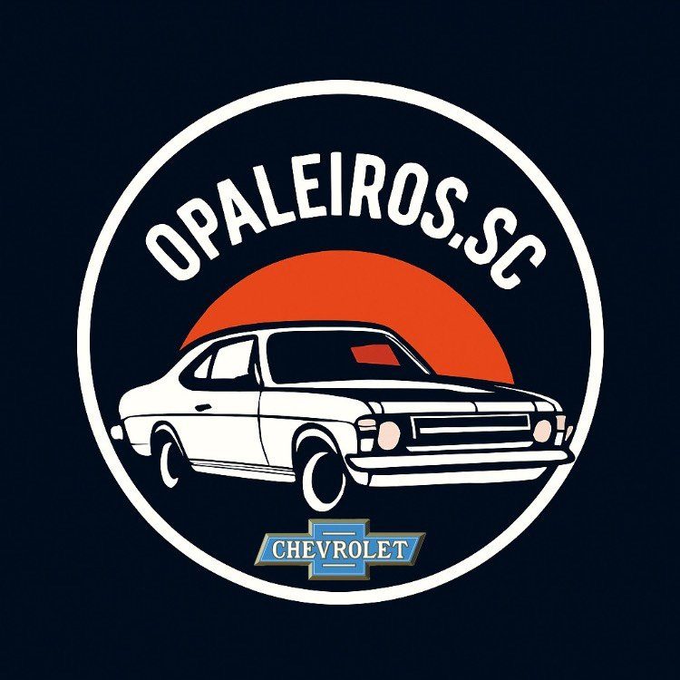

Vai Rodar
Vai RodarUma jornada fragmentada
Quando o carro apresenta um problema, o motorista enfrenta decisões demais.
Ele precisa entender o sintoma, encontrar a categoria correta, comparar oficinas, avaliar confiança, consultar disponibilidade e negociar preço. Tudo isso sem saber exatamente por onde começar.
?
Baixa clareza técnicaO motorista sabe descrever o ruído ou o sintoma, mas não necessariamente o serviço de que precisa.
≡
Oferta dispersaOficinas, peças, atendimento emergencial e promoções vivem em canais diferentes.
↔
Comparação difícilA escolha depende de localização, avaliações, agenda, preço e confiança.
A abundância de alternativas pode paralisar a decisão.
A paradoja da escolha: quando há opções demais e pouca orientação, o usuário tende a adiar, abandonar ou decidir com insegurança.
Vai Rodar Jornada principalDo problema à solução
Uma porta de entrada simples para diferentes necessidades.
1DescreverO motorista escreve em linguagem natural.
2InterpretarA IA identifica categorias e intenção.
3CompletarPlaca, localização e imagens opcionais.
4ConectarOficinas, peças, propostas ou emergência.
5ResolverMensagem, reserva ou compra imediata.
Como podemos te ajudar hoje?Descreva o problema do seu carro.
➤
Meu carro faz barulho ao girar e a direção está pesada.
Freios e suspensãoPneus e alinhamentoRevisão geral
Keycut de navegação:
O assistente no home resume a proposta de valor da plataforma. Ele não é apenas um chat: é um atalho para tudo o que a experiência oferece.
Vai Rodar 02 · Buscar oficinasBusca específica
Escolher uma oficina com filtros, IA e transparência.
Para quem já sabe o que procura, a plataforma mostra oficinas ordenadas por avaliação e permite filtrar por localização, categoria e disponibilidade.
Buscar por bairro, categoria ou problema...
ButantãAberto agoraPneus4.8+

Butantã Pneus Express
Av. Vital Brasil, 890 · Pneus e alinhamento
Auto Center Vital Brasil
Rua Camargo, 221 · Freios e suspensão
⌖
Filtros úteisEndereço, aberto agora, categoria e melhores avaliações.
☏
Ações diretasEnviar mensagem, chamar e visualizar mais informações.
◷
ReservasHorários organizados, serviços oferecidos e agendamento online.
Vai Rodar 06 · Compra e vendaMarketplace automotivo
Uma camada adicional de relacionamento com o motorista.
⌕
Comprar carrosBusca inteligente e filtros por marca, modelo, ano, cor, estado, quilometragem e endereço. O usuário envia mensagem ou proposta.
+
Venda assistidaPlaca, dados do veículo, quilometragem, descrição, fotos, localização e preço. Publicação gratuita ou destaque.
R$
Avaliação rápidaEstimativa ilustrativa com faixa de mercado e valor justo sugerido após análise simulada por IA.
Potencial estratégico: ampliar a frequência de uso. O relacionamento deixa de acontecer apenas quando existe um problema mecânico.
Vai Rodar 07 · Conteúdo comercialPromoções, eventos e oportunidades
Conteúdo para trazer recorrência e descoberta.
O protótipo diferencia três origens: promoções de empresas maiores, eventos automotivos e ofertas semanais publicadas por oficinas.
No protótipo, os conteúdos comerciais são demonstrativos. O modelo final deve trabalhar com parceiros, oficinas verificadas e regras claras de publicação.
Vai Rodar 08 · RelacionamentoA experiência continua depois do clique
Mensagens, notificações, cotações e conta em um único lugar.
✉
MensagensConversas no estilo WhatsApp com oficinas e lojas.
R$
Minhas cotaçõesHistórico de pedidos e propostas recebidas.
◷
ReservasAgendamentos atuais, anteriores e gestão de alterações.
♟
Minha contaDados pessoais, contato e placa do carro.
O produto não termina na descoberta: ele acompanha a decisão.
Essa continuidade cria confiança, melhora a conversão e abre espaço para retenção.
Vai Rodar 09 · Lado da oferta
Cadastro de oficinas
Uma proposta de valor para negócios automotivos locais.
A oficina pode cadastrar seus dados, serviços, localização, modalidade de atendimento e horários. A plataforma organiza a demanda e aproxima clientes relevantes.
Leads mais completosAgendaMensagensPropostas
Cadastre sua oficina
Nome da oficina ou empresa
Nome do responsável · WhatsApp
Cidade · endereço exato
Serviços principais
Dias e horários de atendimento
Garantir acesso antecipado
Hipótese: quanto melhor estruturada a solicitação recebida pela oficina, menor o atrito comercial e maior a chance de resposta útil para o motorista.
Vai Rodar Hipóteses comerciais · validarPossíveis linhas de negócio
Um ecossistema com múltiplas formas de captura de valor.
As linhas abaixo são hipóteses para teste. O modelo deve ser validado com motoristas, oficinas e parceiros.
1
Planos para oficinasAssinatura para presença qualificada, agenda, mensagens e ferramentas comerciais.
2
Leads e conversõesReceita associada a propostas, reservas ou serviços concluídos.
3
Destaque e mídiaPromoções de marcas, campanhas segmentadas e anúncios em destaque.
4
EmergênciaMargem ou comissão sobre serviços urgentes comprados na plataforma.
5
MarketplaceDestaques e oportunidades em peças, compra e venda de carros.
6
Dados de demandaInteligência agregada para entender necessidades por categoria e região.
Vai Rodar Próximos passosDa demonstração à validação
Transformar o protótipo em uma operação testável.
01
Validar o problemaEntrevistas com motoristas e oficinas para mapear fricções e linguagem real.
02
Priorizar o MVPIA de triagem, propostas, busca de oficinas, mensagens e reservas.
03
Testar uma regiãoOperação piloto com oficinas selecionadas e acompanhamento próximo.
04
Medir e ajustarConversão, tempo de resposta, satisfação, recorrência e qualidade dos leads.
Pergunta central do MVP:
A orientação por IA aumenta a confiança do motorista e melhora a qualidade da conexão com a oficina?
Foco operacional:
Começar com categorias de maior demanda e uma oferta local suficientemente boa.